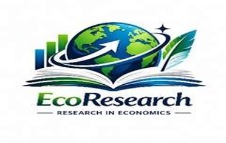

Gouvernance et Economie des institutions
Qualité institutionnelle, efficacité des politiques publiques, transparence, gouvernance locale et ressources naturelles.

Driving Research, Inspiring DevelopmentEcoResearch valorise la recherche scientifique, les publications, les études économiques, les formations et le dialogue entre chercheurs, décideurs et partenaires du développement.
Une plateforme institutionnelle pour diffuser les connaissances, renforcer les collaborations et soutenir des politiques publiques plus efficaces.
À propos
EcoResearch est une association composée de chercheurs, d’enseignants, d’économistes et d’experts engagés dans la production et la diffusion de connaissances utiles pour l’action publique, le secteur privé et la société civile.
L’association contribue à renforcer le débat scientifique et institutionnel sur les enjeux de transformation économique, d’inclusion sociale, de gouvernance, d’innovation et de résilience en Afrique.
Devenir une référence africaine en matière de recherche économique, d’analyse des politiques publiques et de diffusion scientifique.
Produire des analyses rigoureuses, publier des résultats scientifiques et accompagner les décideurs dans la formulation de politiques fondées sur les preuves.
Axes de recherche
EcoResearch couvre les grands enjeux contemporains du développement et des politiques publiques.
Qualité institutionnelle, efficacité des politiques publiques, transparence, gouvernance locale et ressources naturelles.
Industrialisation, diversification productive, compétitivité, chaînes de valeur et intégration régionale.
Dette publique, fiscalité, mobilisation des ressources intérieures, infrastructures et finance durable.
Intelligence artificielle, fintech, transformation digitale, innovation et souveraineté numérique.
Transition énergétique, accès à l’énergie, résilience climatique, agriculture intelligente et développement durable.
Éducation, emploi des jeunes, protection sociale, réduction des inégalités et inclusion économique.
Publications
Note d’analyse sur les leviers d’une croissance plus inclusive et plus résiliente.
How does green finance accelerate the shift to energy revolution in developing countries?.
Analyse des marges budgétaires, du financement durable et de la soutenabilité de la dette.
Études et consultations
EcoResearch propose un appui technique pour les diagnostics économiques, évaluations, rapports sectoriels et notes de politiques publiques.
Analyses de conjoncture, politiques budgétaires, inflation, croissance et vulnérabilités.
Évaluation ex ante, mi-parcours et finale, ainsi que recommandations opérationnelles.
Synthèses décisionnelles, briefs et documents d’orientation pour les acteurs publics et privés.
Événements
EcoResearch organise des espaces de dialogue entre la recherche, les institutions et les acteurs du développement.
Thème proposé : repenser le développement économique à l’ère des grandes transitions mondiales, autour de la gouvernance, de la transformation productive, de l’innovation, de la résilience et de l’inclusion.
Formations
Des modules conçus pour les étudiants, chercheurs, administrations publiques, ONG, entreprises et institutions partenaires.
Actualités
Les informations relatives aux axes thématiques, modalités de soumission et calendrier seront publiées ici.
Les policy briefs et working papers seront progressivement intégrés dans le catalogue de publications.
EcoResearch prépare des formations orientées vers la pratique et l’usage des données.
Contact
Pour une demande d’expertise, une proposition de publication, un partenariat ou une inscription à la newsletter, écrivez-nous.
Email : contact@ecoresearch.org
Localisation : Yaoundé, Cameroun
Réseaux : LinkedIn | Facebook | X | YouTube